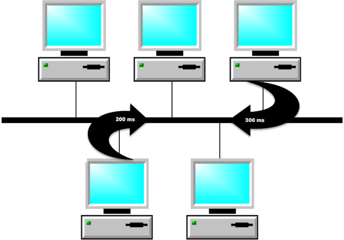

40923242 <<
Previous Next >> 40923251
40923246
PCH 17 Notebook Features and Components
PCH 17 筆記本功能和組件
p122
Overview 總覽
In this module, we will discuss the terms notebook, laptop, and netbook, and show how all three items are similar in functionality and use. We will compare and contrast these devices in terms of their size, weight, and capabilities. Next, we will cover the components that are commonly found in various notebooks, including the LCD panel, switches, and power inverters. Finally, we will discuss the various indications that a component is failing and how to solve the issues associated with faulty components.
在本模塊中，我們將討論筆記本，筆記本電腦和上網本這兩個術語，並說明這三個項目在功能和用途上如何相似。 我們將在尺寸，重量和功能方面對這些設備進行比較和對比。 接下來，我們將介紹各種筆記本電腦中常見的組件，包括LCD面板，開關和電源逆變器。 最後，我們將討論組件故障的各種跡像以及如何解決與故障組件相關的問題。
Laptops and Notebooks 筆記本電腦
Laptops, netbooks, and notebooks are computers that are specifically designed for mobile use, unlike standard desktop workstations that remain stationary. The first laptops were created in the 1970s, but only for very specialized uses. Widespread adoption of laptop computers did not occur until the 1990s, but today they are in use everywhere. Originally, there were distinctions between laptops, notebooks, and netbooks, but in our discussions the terms will be used interchangeably. The distinctions between laptops, notebooks, and netbooks can most often be attributed to marketing, and many of those differences have morphed as the industry continues to evolve. Laptops and notebooks have essentially become a reference to fully equipped mobile computers with hardware and software availability similar to standard desktops using full-instruction set processors (x86 or x64). Most netbooks and tablets generally use embedded processors, such as arm-based RISC or similar. For example, an Alienware R-18 or an HP Elite series laptop runs a full operating system and can support any software designed for a desktop PC. Apple Macbook Pro and Air laptops also run desktop-equivalent, full operating systems. Classifications for a laptop might include desktop replacement, gaming rig, multimedia, or business class. Notebooks, as a subset of laptops, can be further classified as business class, ultrabook, or ultra-portable. Generally, the biggest differences between laptops and notebooks are the physical dimensions and weight.
筆記本電腦，上網本和筆記本電腦是專門為移動用途而設計的計算機，與保持靜止的標準台式機工作站不同。第一台筆記本電腦創建於1970年代，但僅用於非常專業的用途。直到1990年代，筆記本電腦才被廣泛採用，但是今天它們在世界各地都得到了使用。最初，筆記本電腦，筆記本電腦和上網本之間存在區別，但是在我們的討論中，這些術語可以互換使用。筆記本電腦，筆記本電腦和上網本之間的區別通常可以歸因於市場營銷，並且隨著行業的不斷發展，這些差異中的許多差異都在變化。筆記本電腦和筆記本電腦實質上已成為具有硬件和軟件可用性的功能齊全的移動計算機的參考，類似於使用全指令集處理器（x86或x64）的標準台式機。大多數上網本和平板電腦通常使用嵌入式處理器，例如基於Arm的RISC或類似處理器。例如，Alienware R-18或HP Elite系列筆記本電腦運行完整的操作系統，並且可以支持為台式PC設計的任何軟件。 Apple Macbook Pro和Air筆記本電腦還運行與台式機等效的完整操作系統。筆記本電腦的分類可能包括台式機更換，遊戲機，多媒體或商務艙。作為筆記本電腦的子集，筆記本電腦可以進一步分為商務類，超極本或超便攜式。通常，筆記本電腦和筆記本電腦之間的最大區別是物理尺寸和重量。
While most laptops and notebooks may share similar processor design and software with their desktop counterparts, netbooks and tablets are quite different, because netbooks and tablets use ARM or MIPS RISC processors. In netbooks and tablets expandability is usually limited to an external USB port and micro-SD card reader. Netbook as a name is increasingly being replaced with "Chromebook", which is available from most major computer manufacturers. The OS and software available is limited and specialized for these processors. Current models include the Android and Windows RT operating systems. With the power of cloud computing and software as a service (SaaS), netbooks and tablets are more enticing for users because of their lower cost, lightweight nature, and longer battery life. We will discuss tablets separately as a “mobile device” in another module.
雖然大多數筆記本電腦和筆記本電腦可能與台式機共享相似的處理器設計和軟件，但上網本和平板電腦卻大不相同，因為上網本和平板電腦使用ARM或MIPS RISC處理器。在上網本和平板電腦中，可擴展性通常僅限於外部USB端口和micro-SD讀卡器。上網本的名稱正越來越多地由大多數主要計算機製造商提供的“ Chromebook”代替。可用的OS和軟件受限制並且專門針對這些處理器。當前的模型包括Android和Windows RT操作系統。憑藉雲計算和軟件即服務（SaaS）的功能，上網本和平板電腦具有較低的成本，輕巧的特性和更長的電池壽命，因此對用戶更具吸引力。我們將在另一個模塊中將平板電腦作為“移動設備”進行單獨討論。
Laptops are regular computers and are fully capable of completing all of the same functions as a desktop workstation. As stated above, the main difference is their portability and size. The main difference is their size: they are much smaller and more compact than a traditional workstation. For this reason, they are limited in their internal component replacement, upgrades, and expansion, and these upgrades are performed differently than in a traditional computer workstation. The main differences between laptops, notebooks, and netbooks are their size and the amount of processing power and capabilities they have. Laptops tend to have more internal storage, video capabilities, and processing power than the smaller netbooks. Because laptops and notebooks are smaller than their desktop counterparts, most laptops compromise on power to allow for mobility and smaller size. The compact size of these devices reduces their ability to provide cooling. Therefore, processing power is often sacrificed to minimize heat and maximize battery life.
筆記本電腦是普通計算機，完全能夠完成與台式機工作站相同的所有功能。如上所述，主要區別在於它們的可移植性和大小。它們的主要區別在於它們的大小：它們比傳統的工作站小得多，而且更緊湊。因此，它們在內部組件更換，升級和擴展方面受到限制，並且這些升級的執行方式與傳統計算機工作站不同。筆記本電腦，筆記本電腦和上網本之間的主要區別在於它們的大小以及它們具有的處理能力和功能量。筆記本電腦往往比較小的上網本具有更多的內部存儲，視頻功能和處理能力。由於筆記本電腦和筆記本電腦的體積小於台式機，因此大多數筆記本電腦在功耗上都存在折衷，以實現移動性和更小的尺寸。這些設備的緊湊尺寸降低了它們提供冷卻的能力。因此，通常犧牲處理能力以最小化熱量並最大化電池壽命。
In spite of these limitations for most laptops, most all manufacturers offer models with top of the line mobile processors, discrete graphics cards, improved cooling, and a comparable amount of RAM (currently up to 32 GB). With this kind of processing power and speed, laptops users may experience less than average battery life.
儘管大多數筆記本電腦都有這些限制，但大多數所有製造商都提供配備頂級移動處理器，獨立顯卡，改進的散熱和相當數量的RAM（當前最高32 GB）的型號。通過這種處理能力和速度，筆記本電腦用戶可能會遇到比平均電池壽命短的情況。
The most common type of memory used in laptop computers is the small outline dual in-line memory module (SODIMM). SODIMM is a good option for laptop computers, as it takes up a fraction of the space the dual in-line memory module (DIMM) of a typical desktop computer does.
便攜式計算機中最常用的內存類型是小型雙列直插式內存模塊（SODIMM）。 SODIMM對於便攜式計算機來說是一個不錯的選擇，因為它僅佔台式計算機雙列直插式內存模塊（DIMM）的一小部分。

PCH 17 Installing and Configuring Laptop Hardware
PCH 17 安裝和配置筆記本電腦硬件
p123
As a technician, you will be required to install and configure laptop hardware. PC laptop manufacturers publish specification manuals as well as a variety of service manuals online that can help you install and configure laptop hardware. Most include information from a complete system teardown to replacing a motherboard or CPU.
作為技術人員，您將需要安裝和配置筆記本電腦硬件。 PC筆記本電腦製造商會在線發布規格手冊以及各種服務手冊，以幫助您安裝和配置筆記本電腦硬件。大多數信息包括從完整的系統拆卸到更換主板或CPU的信息。
Whenever you are working with laptop hardware, always check for the most complete up-to-date manual for anything more complicated than RAM, hard drives, or most wireless NIC cards. Also, always use safe handling and anti-static procedures when working on a computer.
每當使用筆記本電腦硬件時，請始終檢查最完整的最新手冊，以查找除RAM，硬盤驅動器或大多數無線NIC卡之外的任何復雜信息。此外，在計算機上工作時，請始終使用安全的處理方法和防靜電程序。
Expansion 擴張
The first method that was developed to expand a laptop’s capabilities was the Personal Computer Memory Card International Association (PCMCIA) card. These cards were inserted into an expansion slot on the slide of the laptop and fit almost completely inside the casing of the machine. These cards originally came as PC cards (16-bit or 32-bit) or CardBus (32-bit) cards that fit into the associated slot. These cards were hot-swappable, meaning that the card could be ejected or inserted while the computer was still powered on. The idea of these cards was to provide a standard expansion port, similar to a PCI expansion slot on a traditional desktop computer. These cards had 68 pins in a two-row connector. These cards came in three types: type I, type II, and type III. Type I was used to provide additional memory and storage capabilities, but is now obsolete. Type II was used to provide additional input/output connections (like FireWire or USB), a network interface card, modem, or other such external devices/connectivity. Type II cards were only 5 mm thick, so they usually had to include a dongle to convert a flat proprietary connection to a standard connection like FireWire, RJ-45, or RJ-11. Type III was used as an upgraded version of the type II device and was thicker, reaching 10.5 mm in size, reducing or eliminating the need for a dongle. Cardbus, an improvement to the PC card, was a full 32-bit expansion card system and operated very similarly to the PC card. The CardBus was easily identified by looking at the edge of the expansion card, since it contained a golden edge where the connectors were. The card in the first image below has a black edge, and is a PC card, not a CardBus.


擴展筆記本電腦功能的第一種方法是國際個人計算機存儲卡協會（PCMCIA）卡。這些卡已插入筆記本電腦滑軌上的擴展槽中，幾乎完全可以裝入計算機機箱內。這些卡最初是作為可插入相關插槽的PC卡（16位或32位）或CardBus（32位）卡來的。這些卡是可熱插拔的，這意味著可以在計算機仍打開電源時彈出或插入卡。這些卡的想法是提供一個標準擴展端口，類似於傳統台式計算機上的PCI擴展插槽。這些卡在兩行連接器中有68個引腳。這些卡分為三種類型：I型，II型和III型。類型I用於提供其他內存和存儲功能，但現在已過時。類型II用於提供其他輸入/輸出連接（如FireWire或USB），網絡接口卡，調製解調器或其他此類外部設備/連接性。 II型卡只有5毫米厚，因此它們通常必須包含一個加密狗才能將扁平的專有連接轉換為FireWire，RJ-45或RJ-11等標準連接。 III型用作II型設備的升級版，它更厚，達到10.5毫米，從而減少或消除了對加密狗的需求。 Cardbus是PC卡的改進，它是一個完整的32位擴展卡系統，其操作與PC卡非常相似。通過查看擴展卡的邊緣可以輕鬆識別CardBus，因為它包含連接器所在的金色邊緣。下圖第一張圖中的卡具有黑色邊緣，是PC卡，而不是CardBus。
ExpressCard is a type of laptop expansion card that replaced PC cards and PCMCIA cards. Internally, the ExpressCard slots support both PCI Express and USB 2.0 connectivity and each card uses whichever standard to connect to the motherboard that the card designer believes is most appropriate for the card’s intended use. ExpressCard is hot-swappable, just like PC cards and PCMCIA cards. ExpressCard supports two form factors: the ExpressCard 34 (which is 34 mm wide) and ExpressCard 54 (which is 54 mm wide and shaped like an L). Regardless of which ExpressCard you are using, the connector inside the laptop is the same on both versions (34 mm), but the exterior portion can be either 34 mm or 54 mm. The ExpressCard slots are slightly shorter in length than a PCMCIA card, but are the same thickness at 5 mm. The ExpressCard 34 can fit in either an ExpressCard 34 slot or an ExpressCard 54 slot. The ExpressCard 54 can only fit into an ExpressCard 54 slot, though. As of 2016, it appears that all manufacturers have eliminated expansion cards in favor of eSata, USB, and Thunderbolt2 ports for laptop expandability. ExpressCards are still available in aftermarket sales, but the technology is soon to be deprecated as PCMCIA is now.


ExpressCard是筆記本電腦擴展卡的一種，代替PC卡和PCMCIA卡。在內部，ExpressCard插槽同時支持PCI Express和USB 2.0連接，並且每個卡都使用卡設計者認為最適合卡預期用途的任何標準連接到主板。 ExpressCard可熱插拔，就像PC卡和PCMCIA卡一樣。 ExpressCard支持兩種尺寸：ExpressCard 34（寬度為34毫米）和ExpressCard 54（寬度為54毫米，形狀像L型）。無論使用哪種ExpressCard，筆記本電腦內部的連接器在兩個版本上都是相同的（34 mm），但是外部可以是34 mm或54 mm。 ExpressCard插槽的長度略短於PCMCIA卡，但厚度相同（5毫米）。 ExpressCard 34可以安裝在ExpressCard 34插槽或ExpressCard 54插槽中。但是，ExpressCard 54只能裝入ExpressCard 54插槽中。截至2016年，似乎所有製造商都已經淘汰了擴展卡，而採用eSata，USB和Thunderbolt2端口來實現筆記本電腦的可擴展性。 ExpressCard仍可在售後市場中購買，但是隨著PCMCIA的出現，該技術很快就會被棄用。
| Version 1 |
10 Gb/s |
DisplayPort 顯示端口 |
| Version 2 |
20 Gb/s |
DisplayPort 顯示端口 |
| Version 3 |
40 Gb/s |
USB Type C |
| Version 1 |
10 Gb/s |
DisplayPort 顯示端口 |
| Version 2 |
20 Gb/s |
DisplayPort 顯示端口 |
| Version 3 |
40 Gb/s |
USB Type C |
PCH 17 Notebook Features
PCH 17 筆記本功能
p124
Notebook keyboards have special function keys that do not exist on standard desktop keyboards. Notice that in the image below, you can see the special blue icons on the keyboard, especially on the arrow keys and function keys.
筆記本電腦鍵盤具有標準台式機鍵盤上不存在的特殊功能鍵。 請注意，在下圖中，您可以在鍵盤上看到特殊的藍色圖標，尤其是箭頭鍵和功能鍵上的圖標。

By pressing the FN key in combination with the notebook specific keys (the blue keys in the image above) the user can access features such as increasing or decreasing screen brightness, toggling Wi-Fi and Bluetooth radios on and off, cycling through external monitor connections, adjusting the speaker volume, and other features depending on the specific laptop. Note in the image above that some of the letter and character keys have numbers written on them. That is because most laptops do not have room for a dedicated number pad and these keys provide that functionality when pressing the FN and NUM LOCK combination. If you are typing and notice numbers on the screen instead of letters, it may be the result of accidentally pressing that key sequence.
通過同時按下FN鍵和筆記本專用鍵（上圖中的藍色鍵），用戶可以使用以下功能：增加或降低屏幕亮度，打開和關閉Wi-Fi和藍牙無線電，通過外部顯示器連接循環，調整揚聲器的音量以及其他功能，具體取決於特定的筆記本電腦。請注意，在上圖中，某些字母和字符鍵上面寫有數字。這是因為大多數筆記本電腦沒有足夠的空間容納專用數字鍵盤，並且在按FN和NUM LOCK組合鍵時這些鍵可提供該功能。如果您在屏幕上鍵入並註意數字而不是字母，則可能是由於不小心按下該鍵序列而導致的。
Another special feature of a laptop is the ability to connect an external monitor. Most desktop computers come standard with a single video output, whereas most laptops come with an external video port using HDMI, DisplayPort, DVI, or VGA. This allows you to duplicate, or extend, the internal display to the monitor to create a single continuous “larger” monitor. This is also advantageous when connecting a projector to the external port for presentations.
筆記本電腦的另一個特殊功能是可以連接外部顯示器。大多數台式機標配單個視頻輸出，而大多數筆記本電腦均帶有使用HDMI，DisplayPort，DVI或VGA的外部視頻端口。這使您可以將內部顯示複製或擴展到監視器，以創建單個連續的“較大”監視器。將投影儀連接到外部端口進行演示時，這也是有利的。
Laptop Displays 筆記本電腦顯示器
Unlike desktop computers, laptops have a built-in monitor. These displays cannot be upgraded or changed out for a “better model.” So, it is important that users select laptops that have displays they are happy with because it is one of the most important components from the user perspective. Over the years, manufacturers have used plasma and Light-Emitting Diode (LED) technology for displays, but display technology eventually converged on Liquid Crystal Display (LCD) backlit with LED. Plasma was one of the first display technologies used for laptops but was discarded in favor of the lighter LED and LCD. Organic Liquid Crystal Display (OLED) is expanding in the mobile telephone market and has recently started to become viable for laptop displays.
與台式計算機不同，筆記本電腦具有內置顯示器。這些顯示器無法升級或更改為“更好的型號”。因此，重要的是用戶選擇具有他們滿意的顯示器的筆記本電腦，因為從用戶角度來看，它是最重要的組件之一。多年來，製造商已將等離子和發光二極管（LED）技術用於顯示器，但是顯示技術最終融合到了具有LED背光的液晶顯示器（LCD）上。等離子是最早用於筆記本電腦的顯示技術之一，但為了更輕便的LED和LCD而被丟棄。有機液晶顯示器（OLED）在移動電話市場中正在擴展，最近開始在筆記本電腦顯示器中變得可行。
Plasma displays were popular in early 1990s laptops when a 15- to 20-pound unit was acceptable. At that time, plasma only produced a black and white display. Plasma displays tend to weigh more than either LCD or LED, but offer better contrast ratios. In addition, plasma displays do not require backlighting. While plasma is not used in modern laptop displays (internally), it is used in a large number of televisions, which now can be connected through HDMI or DisplayPort as a secondary monitor.
等離子顯示器在1990年代初的筆記本電腦中很受歡迎，當時可接受15至20磅的設備。那時，等離子僅產生黑白顯示。等離子顯示器的重量往往超過LCD或LED，但對比度更高。另外，等離子顯示器不需要背光。儘管等離子在現代筆記本電腦顯示器中（內部）不使用，但它在大量電視中使用，現在可以通過HDMI或DisplayPort將其連接為輔助顯示器。
The second technology used in laptop displays is the LED display, which is very similar to an LCD display. The main difference between LCD and LED display is the type of backlight used. LED displays use an LED bulb for the backlight, instead of cold compact fluorescent light (CCFL). The reason for this is that LED bulbs use less power than CCFLs, thereby increasing the battery life of the laptop during operations. LED displays tend to be thinner and initially lost ground in the laptop market to LCD displays with CCFL backlighting.
筆記本電腦顯示器中使用的第二種技術是LED顯示器，它與LCD顯示器非常相似。 LCD和LED顯示屏之間的主要區別在於所使用的背光類型。 LED顯示器使用LED燈泡代替背光冷熒光燈（CCFL）。原因是LED燈泡比CCFL耗電少，從而延長了筆記本電腦在操作過程中的電池壽命。 LED顯示器趨於更薄，最初在筆記本電腦市場上被帶CCFL背光的LCD顯示器所取代。
LCDs utilize an active-matrix display with a transistor for every dot in the screen known as a pixel. Display technology uses pixel count measurements such as 640 (vertical pixels) x 480 (horizontal pixels); 800 x 600, or 1024 x 768; aspect ratios such as 4:3, 16:9, or 16:10; and lines of horizontal resolution such as 480p, 702i, and 1080p to name a few. Displays are measured diagonally, so a 17” laptop is the viewable area measured from corner to corner.
LCD使用有源矩陣顯示器和一個晶體管，用於屏幕中每個點（稱為像素）。顯示技術使用像素計數測量，例如640（垂直像素）×480（水平像素）； 800 x 600或1024 x 768；長寬比，例如4：3、16：9或16:10；以及水平分辨率的線條，例如480p，702i和1080p等。顯示屏是對角線測量的，因此17英寸筆記本電腦是從一個角落到另一個角落的可見區域。
Current LCD display resolution can range from a tablet or a 2-in-1, which might be 1366 x 768, to Ultrabook with 1920 x 1080 full HD, or business class and gaming rigs that can provide Ultra HD resolutions with a still higher pixel count. In a standard display with a resolution of 1920 x 1080, there are more than one million transistors used to provide the image on the screen. Originally, LCDs used a CCFL backlight to illuminate the transistors and provide the image on the screen. If the backlight fails, the laptop will not display an image and the CCFL will need to be replaced. This is not very common, though, because CCFL bulbs usually last for 50,000 hours of usage.
當前的LCD顯示分辨率範圍從平板電腦或2合1（可能是1366 x 768）到具有1920 x 1080全高清的Ultrabook，或者可以提供更高像素的超高清分辨率的商務和遊戲設備計數。在分辨率為1920 x 1080的標準顯示器中，有超過一百萬個晶體管用於在屏幕上提供圖像。最初，LCD使用CCFL背光來照亮晶體管並在屏幕上提供圖像。如果背光燈失效，則筆記本電腦將不會顯示圖像，並且需要更換CCFL。但是，這不是很常見，因為CCFL燈泡通常可持續使用50,000小時。
Laptops run on direct current (DC) power from the battery or the power adapter. LCD CCFL laptop displays, though, require alternating current (AC) to power their backlights. The inverter in a laptop performs this conversion function from low-voltage DC to high-voltage AC. If the inverter fails, which was a common problem, a technician is required to replace this part. Luckily, these inverters are not too costly and can be replaced by a technician without too much difficulty. In the image below, you can see the typical location of a laptop’s inverter in the bevel of the laptop display.
筆記本電腦依靠電池或電源適配器的直流（DC）電源運行。但是，LCD CCFL筆記本電腦顯示器需要交流電（AC）為背光燈供電。筆記本電腦中的逆變器執行從低壓DC到高壓AC的轉換功能。如果逆變器出現故障（這是常見問題），則需要技術人員更換該部件。幸運的是，這些逆變器並不太昂貴，可以很容易地由技術人員更換。在下圖中，您可以在筆記本電腦顯示屏的斜角中看到筆記本電腦逆變器的典型位置。

Although using the CCFL provides a higher quality and more consistent image, laptop manufacturers for the most part have achieved similar quality with HD resolutions using an LED backlit LCD display. Effectively lighter and less power consuming, this is the current trend for most laptops on the market. With the continuing development of HD, QHD, and UHD resolutions in the television display market, laptop manufacturers are incorporating these features into higher end gaming and professional media systems. The table below is indicative of some common resolutions by native resolution and corresponding standard:
儘管使用CCFL可以提供更高的質量和更一致的圖像，但是筆記本電腦製造商在大多數情況下已經通過使用LED背光LCD顯示屏獲得了高清分辨率的相似質量。 有效地減輕重量和減少功耗，這是市場上大多數筆記本電腦的當前趨勢。 隨著電視顯示市場中HD，QHD和UHD分辨率的不斷發展，筆記本電腦製造商正在將這些功能集成到高端遊戲和專業媒體系統中。 下表通過原始分辨率和相應的標準指示了一些常見的分辨率：
| Pixel RatioNative Resolution像素比率原生分辨率 |
Aspect Ratio
|
Standard &Resolution
|
| 640×480 |
4:3 |
VGA |
| 1280x 720 |
16:9 |
WXGA (720p equivalent) |
| 1366×786 |
16:9 |
HD |
| 1680×1050 |
8:5 |
WSXGA |
| 1920×1080 |
16:9 |
FHD (1080p equivalent) |
| 1920×1200 |
16:10 |
WUXGA |
| 2560x 1440 |
16:9 |
QHD |
| 2560x 1600 |
16:10 |
WQXGA |
| 3840x 2160 |
16:9 |
4K UHD |
| Pixel RatioNative Resolution像素比率原生分辨率 |
Aspect Ratio
|
Standard &Resolution
|
| 640×480 |
4:3 |
VGA |
| 1280x 720 |
16:9 |
WXGA (720p equivalent) |
| 1366×786 |
16:9 |
HD |
| 1680×1050 |
8:5 |
WSXGA |
| 1920×1080 |
16:9 |
FHD (1080p equivalent) |
| 1920×1200 |
16:10 |
WUXGA |
| 2560x 1440 |
16:9 |
QHD |
| 2560x 1600 |
16:10 |
WQXGA |
| 3840x 2160 |
16:9 |
4K UHD |
Every LCD and LED display is built with a native resolution. This means that every display has an optimal display quality that can be achieved only when the signal input matches the native resolution. If the laptop display has a native resolution of 1920 x 1080 (1080p), then every other resolution that the laptop display uses is either scaled up (stretched) or scaled down (shrunk). This affects the display of all the elements on the laptops including video, images, and desktop elements.
每個LCD和LED顯示屏均具有本機分辨率。這意味著只有在信號輸入與原始分辨率匹配時，才能實現每個顯示器的最佳顯示質量。如果便攜式計算機顯示器的原始分辨率為1920 x 1080（1080p），則便攜式計算機顯示器使用的所有其他分辨率將按比例放大（拉伸）或按比例縮小（縮小）。這會影響筆記本電腦上所有元素的顯示，包括視頻，圖像和桌面元素。
When choosing a laptop, ensuring the display meets your needs is important. The two types of LCDs available are Twisted Nematic (TN) and In-Plane Switching (IPS). The type of LCD controls the viewing angle, ghosting, response time, and native resolution. Generally, a manufacture offers one or the other in a product line, so knowing your usage patterns helps to inform decisions when purchasing a laptop. Replacing a laptop display requires the technician to order the precise replacement type from either the manufacturer or a third-party seller as the replacement must match the original.
選擇筆記本電腦時，確保顯示屏滿足您的需求非常重要。可用的兩種LCD類型為扭曲向列（TN）和平面內切換（IPS）。 LCD的類型控制視角，重像，響應時間和原始分辨率。通常，製造商在產品線中提供一個或另一個，因此了解您的使用方式有助於在購買筆記本電腦時做出決定。更換筆記本電腦顯示器時，技術人員必須從製造商或第三方銷售商處訂購精確的更換類型，因為更換的物品必須與原始物品匹配。
TN LCDs have a tendency to be less expensive and have faster response times than IPS LCDs. They also have a smaller viewing angle than IPS LCDs so they work well for the laptop environment where the user is typically located directly in front of the machine. The viewing angle is a measure of the amount of the display that can be seen adequately at a certain degree from the center of the screen. A wide viewing angle may be a privacy concern for some, while it could be considered a benefit by others. Many laptops now boast a viewing angle of up to 170 degrees, providing maximum flexibility in their displays.
TN LCD具有比IPS LCD更便宜，響應時間更快的趨勢。與IPS LCD相比，它們的視角也更小，因此它們可以很好地在通常用戶直接位於機器正面的筆記本電腦環境中使用。視角是可以從屏幕中心以一定程度充分看到的顯示量的度量。對於某些人來說，寬視角可能是一個隱私問題，而對於其他人則可以考慮。現在，許多筆記本電腦擁有高達170度的可視角度，在其顯示屏中提供最大的靈活性。
TN LCDs also have a faster response time, which is how fast the pixels move from state to state (black to white or grey to grey). Response times are measured in milliseconds (ms) with TN coming in between 1-2ms and IPS between 3-5ms. The color variations are tied to the input and output commands as translated to the display. For uses such as gaming and video editing, TN is generally preferred over IPS.
TN LCD的響應時間也更快，這就是像素從狀態到狀態（黑色到白色或灰色到灰色）移動的速度。響應時間以毫秒（ms）為單位，TN在1-2ms之間，IPS在3-5ms之間。顏色變化與翻譯成顯示屏的輸入和輸出命令有關。對於遊戲和視頻編輯等用途，TN通常比IPS更可取。
In spite of the advantage between cost and response times, manufacturers will often use IPS in business class machines and higher end gaming laptops because of better color reproduction and viewing angle. An IPS display combined with a higher quality graphics card can make up for slightly slower response times.
儘管成本和響應時間之間有優勢，但製造商仍會在商務級機器和高端遊戲筆記本電腦中使用IPS，因為它們具有更好的色彩還原和視角。 IPS顯示屏與更高質量的圖形卡相結合可以彌補響應速度稍慢的問題。
Other considerations in choosing a display are contrast ratio–the measure of the difference between the lightest and darkest portions of the display–and brightness, which is the overall measure of lightness or darkness.
選擇顯示器時，還需要考慮其他因素，例如對比度（顯示器最亮和最暗部分之間的差異的量度）和亮度，即衡量明暗程度的整體指標。
The last option for laptop displays is the newest technology–organic LED (OLED)–which uses organic compounds between electrodes to emit light instead of an LCD or LED bulb. These are still not widely used in the laptop market but as the technology becomes more common in the cellular telephone market, it is driving changes in the laptop market. OLED provides a superb color depth and much better contrast ratio than traditional LCD/LED displays but their cost is still prohibitive in modern laptops. As of early 2016, four manufacturers have slated a spring release of OLED laptops.
筆記本電腦顯示器的最後一個選擇是最新技術-有機LED（OLED），該技術在電極之間使用有機化合物發光而不是LCD或LED燈泡。這些技術尚未在筆記本電腦市場中得到廣泛使用，但是隨著該技術在蜂窩電話市場中變得越來越普遍，它推動了筆記本電腦市場的變化。與傳統的LCD / LED顯示器相比，OLED提供了出色的色彩深度和更好的對比度，但在現代筆記本電腦中，其成本仍然高昂。截至2016年初，四家製造商已計劃在春季發布OLED筆記本電腦。
The last item for consideration is completely unrelated to the display itself but is a function of the display being the tallest element on the laptop. Due to this fact the WLAN antennae are routed up onto the top of the display under the bezel. Care must be taken when repairing displays and removing the bezel so as to not harm the antennae. This is especially important since the incorporation of Wireless-n NIC cards in laptops.
需要考慮的最後一項與顯示器本身完全無關，但取決於顯示器是筆記本電腦中最高的元素。由於這個事實，WLAN天線被路由到邊框下方顯示器的頂部。修理顯示器和卸下擋板時必須小心，以免損壞天線。這是非常重要的，因為在筆記本電腦中集成了Wireless-n NIC卡。
https://youtu.be/79r5rxS276Y
Device Replacement 設備更換
Unlike desktop computers, laptops tend to use proprietary parts, because each manufacturer makes the internal layout and design of their laptop to meet their own design specifications. For this reason, you cannot simply replace a display or keyboard on one laptop with parts from a different model laptop. System boards, network cards, touch pads, and other devices all must be purchased from the original manufacturer, because an aftermarket component won’t necessarily fit in your model. Luckily, a few parts are still standard across all laptops, including hard drives, some ODD (CD/DVD), memory, and CPUs. Note, though, that it is often cheaper to replace a laptop than it is to replace the laptop’s parts. For example, if you have a two-year-old laptop and the display gets cracked, it may be more cost effective to simply buy a newer laptop than to replace the display, because the display may cost several hundred dollars to replace.
與台式計算機不同，筆記本電腦傾向於使用專有零件，因為每個製造商都會對其筆記本電腦進行內部佈局和設計，以符合自己的設計規範。因此，您不能簡單地用其他型號筆記本電腦中的部件替換一台筆記本電腦上的顯示器或鍵盤。系統板，網卡，觸摸板和其他設備都必須從原始製造商處購買，因為售後組件不一定適合您的型號。幸運的是，所有筆記本電腦中仍然有一些部件是標準部件，包括硬盤驅動器，某些ODD（CD / DVD），內存和CPU。不過請注意，更換筆記本電腦通常比更換筆記本電腦的零件便宜。例如，如果您有一台使用了兩年的筆記本電腦，並且顯示屏破裂了，那麼簡單地購買一台較新的筆記本電腦要比更換顯示屏更具成本效益，因為更換顯示屏可能要花費數百美元。
Laptops have two different power sources: power from the wall via the AC adapter and power from the battery. The battery is often replaceable or upgradable by the end user, and can be purchased through numerous third-party websites. The same holds true of the AC adapter. You must be careful to ensure that the wattage and voltage output match as some third-party devices are made with inferior quality, and a mismatch can actually damage your laptop.
筆記本電腦有兩種不同的電源：通過交流適配器從牆上供電和從電池供電。最終用戶通常可以更換或升級電池，並且可以通過眾多第三方網站購買電池。 AC適配器也是如此。您必須小心確保功率和電壓輸出匹配，因為某些第三方設備的製造質量較差，並且不匹配實際上會損壞您的筆記本電腦。

12-1=============================================================================================
Ethernet Standards 以太網標準
10Base-T (802.3i, 1990) as well as 100Base-T and 1000Base-T (1GBASE-T or 1 GigE) Ethernet standards, which are most commonly found in current office networks. We will discover how to plan a basic network connection using 100BaseT. Finally, we will cover differences between Ethernet and TCP/IP.
10Base-T（802.3i，1990）以及100Base-T和1000Base-T（1GBASE-T或1 GigE）以太網標準，它們是當前辦公網絡中最常見的標準。我們將發現如何使用100BaseT規劃基本的網絡連接。最後，我們將介紹以太網和TCP / IP之間的差異。
12-2=============================================================================================
Ethernet Technology 以太網技術
The original 802.3 Ethernet standard sent data over coaxial cables at a half-duplex transmission rate which means devices can only transmit (TX) or Receive (RX) alternately at separate intervals because the data used the same path for both. This is analagous to communicating using a walkie-talkie rather than a telephone.
最初的802.3以太網標準以半雙工傳輸速率通過同軸電纜發送數據，這意味著設備只能以單獨的間隔交替發送（TX）或接收（RX），因為這兩個數據使用相同的路徑。這類似於使用對講機而不是電話進行通信。
This coaxial cable design became known as Thicknet and later Thinnet due to the size of the cables and was mostly used in bus and ring network topologies.
由於電纜的尺寸，這種同軸電纜設計被稱為Thinnet，後來被稱為Thinnet，並且主要用於總線和環形網絡拓撲中。
Twisted pair cabling, dubbed 10BaseT, provided the same 10 Mbps half-duplex maximum bandwidth with a category 3 cable, but the distance was limited to 100 meters due to the lack of the extra shield that coaxial provided. In spite of the increased attenuation (loss of signal strength over distance), network designers moved to twisted pair cabling because of ease of installation and overall lower cost. Coaxial cable fell out of favor and the 802.3 Ethernet standard continues to evolve with faster data rates over twisted pair cabling categories.
雙絞線電纜（稱為10BaseT）與第3類電纜可提供相同的10 Mbps半雙工最大帶寬，但由於缺少同軸電纜提供的額外屏蔽，因此距離限制為100米。儘管衰減增加（信號強度隨距離的損失），但由於易於安裝和總體成本較低，網絡設計人員仍選擇雙絞線佈線。同軸電纜不受歡迎，並且802.3以太網標準繼續發展，雙絞線佈線類別的數據速率更快。
12-3=============================================================================================
Carrier Sense Multiple Access/Collision Detect 載波偵聽多路訪問/衝突檢測
The carrier sense portion means that the device “listens” to the network first to find a “break” in the conversation. If the device doesn’t hear other devices transmitting, then it begins its transmission. Multiple access refers to every device having equal access to the network at all times. This is unlike the token ring network in which each device had to wait for the signal (token) before transmitting. Finally, we have collision detection as part of the CSMA/CD control method. If, by chance, two devices both were ready to transmit, they “listened” to the network for a “lull” in the conversation, and both started transmitting at the same time, the devices are able to detect that they both transmitted at the same time and caused a collision.
運營商感知部分意味著設備首先“監聽”網絡以在會話中找到“中斷”。如果該設備聽不到其他設備的傳輸，則開始傳輸。多路訪問是指每台設備始終具有對網絡的平等訪問權限。這與令牌環網絡不同，在
令牌環網絡中，每個設備都必須在發送之前等待信號（令牌）。最後，我們將碰撞檢測作為CSMA / CD控制方法的一部分。如果偶然地兩個設備都準備好發送，它們在通話中“偵聽”網絡中的“失敗”，並且都同時開始發送，則設備能夠檢測到它們都在發送時發送。同時又造成了碰撞。

Four devices are connected in a physical bus topology. Each device has equal access to the network. Here, all the devices are listening, trying to determine if any other device is communicating before beginning transmission.
四個設備以物理總線拓撲連接。每個設備對網絡都有平等的訪問權限。在這裡，所有設備都在監聽，試圖確定是否有其他設備在開始傳輸之前進行通信。

When a collision is detected, both devices choose a backoff time at random, and then attempt to retransmit again. In the diagram below, the computers choose to wait 200 milliseconds and 300 milliseconds, respectively. When that time is up, they will attempt to sense if another machine is already transmitting. If there is nothing detected, the first machine will transmit its message. Once completed, the second machine will then transmit its message, after its 300 millisecond wait time.
當檢測到衝突時，兩個設備都會隨機選擇一個退避時間，然後嘗試重新傳輸。在下圖中，計算機分別選擇等待200毫秒和300毫秒。時間到時，他們將嘗試檢測另一台機器是否已經在傳輸。如果未檢測到任何內容，則第一台機器將發送其消息。一旦完成，第二台機器將在其300毫秒的等待時間之後發送其消息。

12-4============================================================================================
Evolution of Standards 標準的演變
The Ethernet standard also determines the type of cable, its bandwidth, and its distance limitation. It is important to know these standards, especially those that relate to a category 3, 5, 5e, and 6 cabling standard.
以太網標準還確定電纜的類型，帶寬和距離限制。重要的是要知道這些標準，尤其是與3、5、5e和6類佈線標準有關的標準。
Simply put, bandwidth is the theoretical maximum of the given standard, whereas throughput is the actual potential in a real-world scenario. Many factors affect actual throughput, such as half-duplex vs. full-duplex, cable length, and quality. Both bandwidth and throughput are measured in bits per second (bps) with the prefix K (kilobit), M (megabit), or G (gigabit)
簡而言之，帶寬是給定標準的理論最大值，而吞吐量是實際情況下的實際潛力。許多因素會影響實際吞吐量，例如半雙工與全雙工，電纜長度和質量。帶寬和吞吐量均以每秒比特數（bps）以及前綴K（千比特），M（兆比特）或G（千兆比特）來衡量。
12-5============================================================================================
Planning a Basic Network Connection Using 100/1000BaseT 使用100 / 1000BaseT規劃基本的網絡連接
Current technology in most small office/home office (SOHO) environments will have auto-sensing networking hardware. There are older switches and routers that still remain in some networks that do not have the ability to run at 100/1000BaseT, so check your network documentation!
大多數小型辦公室/家庭辦公室（SOHO）環境中的當前技術都將具有自動感應網絡硬件。在某些網絡中仍然存在一些較舊的交換機和路由器，這些交換機和路由器仍無法在100 / 1000BaseT上運行，因此請查看您的網絡文檔！
A cat 5 cable was standard for 100BaseT but will limit throughput to 100 Mbps so you must use cat 5e or cat 6 if you are trying to achieve 1000BaseT (1 Gbps).
Cat 5電纜是100BaseT的標準配置，但會將吞吐量限制為100 Mbps，因此，如果要實現1000BaseT（1 Gbps），則必須使用Cat 5e或Cat 6。
Most current SOHO environments will have Ethernet wall jacks internally connecting to the next network device, be it a switch or a hub. But, if there is not a connection already present, you must remember that all copper-based Ethernet cable is limited to 100 meters. Do not run the wire in an area where the cabling can cause a safety hazard, become damaged due to environmental conditions, or suffer from electromagnetic interference (EMI).
當前大多數SOHO環境將在內部將以太網牆壁插孔連接到下一個網絡設備，無論是交換機還是集線器。但是，如果尚不存在連接，則必須記住所有基於銅纜的以太網電纜限制為100米。請勿在可能會導致安全隱患，因環境條件而損壞電纜或遭受電磁干擾（EMI）的區域中佈線。
After the machine is connected and powered on (assuming Windows 7 or later), watch the system tray after boot-up to see if there is a wired network icon. The standard Windows 7 icons are:
連接機器並打開電源後（假設使用Windows 7或更高版本），啟動後請查看系統托盤，以查看是否有有線網絡圖標。 Windows 7的標準圖標是：
Access the “network sharing center” to select the type of network access you need to have and add any devices required for the node (e.g., a printer). Verify access by opening the browser or using a command line tool to verify connectivity and addressing.
訪問“網絡共享中心”以選擇所需的網絡訪問類型，並添加該節點所需的任何設備（例如打印機）。通過打開瀏覽器或使用命令行工具來驗證訪問權限，以驗證連接性和地址。

12-6============================================================================================
Differentiating Between Ethernet and TCP/IP 區分以太網和TCP / IP
Although CompTIA A+ does not test on the open systems interconnection model (OSI model), it is a theoretical model that is the basis for the way data travels through computer networks. When you click on an icon and connect to the Internet through a browser such as Google Chrome, Mozilla Firefox, or Internet Explorer, a request to connect is sent through a series of steps from the application layer down to the physical layer. All data physically enters and exits a computer node (client, server, or printer) through a network interface card (NIC) based on the type of medium being used (wireless, copper, or fiber-optic)
儘管CompTIA A +並未在開放系統互連模型（OSI模型）上進行測試，但它是一種理論模型，是數據在計算機網絡中傳輸的基礎。當您單擊圖標並通過瀏覽器（例如Google Chrome，Mozilla Firefox或Internet Explorer）連接到Internet時，連接請求將通過從應用程序層到物理層的一系列步驟發送。根據使用的介質類型（無線，銅纜或光纖），所有數據都通過網絡接口卡（NIC）物理地進入和退出計算機節點（客戶端，服務器或打印機）

The popularity of Ethernet is based on the standardization of protocols and ability to use the TCP/IP suite to carry data throughout a variety of hardware devices.
以太網的普及是基於協議的標準化以及使用TCP / IP套件在各種硬件設備中傳輸數據的能力。
Ethernet is defined by the IEEE 802.3 specification, which sets the standard and interoperability between devices, allowing communication over computer networks. These specifications control how data physically travels between nodes on both the physical layer and the data link layer through media access control (MAC). The hardware controlled by these specifications include NICs, wiring (i.e., cat 5, 5e, and 6) including the RJ-45 connectors, switches, and hubs.
以太網由IEEE 802.3規範定義，該規範設置了設備之間的標準和互操作性，從而允許通過計算機網絡進行通信。這些規範通過媒體訪問控制（MAC）控制數據在物理層和數據鏈路層上的節點之間的物理傳輸方式。這些規範所控制的硬件包括NIC，包括RJ-45連接器，交換機和集線器的佈線（即Cat 5、5e和6）。
Whereas Ethernet controls the physical data, transmission control protocol and Internet protocol (TCP/IP) is a suite of protocols that operate logically throughout the different layers of the OSI model as well as in the TCP/IP model.
以太網控制物理數據，而傳輸控制協議和Internet協議（TCP / IP）是一套協議，可以在OSI模型的不同層以及TCP / IP模型中進行邏輯操作。

13-1============================================================================================
IPv4 and IPv6 Addresses IPv4和IPv6地址
Computer networks — including the Internet, which is the largest computer network — use Transmission Control Protocol/Internet Protocol or TCP/IP for network communications both internally on a LAN/WAN and externally to the Internet.
TCP/IP provides end-to-end connectivity of data. TCP/IP specifies how data should be grouped, addressed, transmitted, routed, and received at the destination address. The TCP/IP model, along with many of its protocols, is maintained and managed by the IETF (Internet Engineering Task Force).
計算機網絡（包括作為最大計算機網絡的Internet）使用傳輸控制協議/ Internet協議或TCP / IP進行內部LAN / WAN上和外部Internet的網絡通信。
TCP / IP提供數據的端到端連接。 TCP / IP指定如何在目標地址處對數據進行分組，尋址，傳輸，路由和接收。 TCP / IP模型及其許多協議由IETF（Internet工程任務組）維護和管理。

While the majority of our networks today still use IPv4, many networks are migrating to the newer IPv6 addressing standards. Additionally, many networks are offering dual support to both IPv4 and IPv6 during the transition. The reason for this transition is that we were running out of valid IPv4 addresses. IPv4 uses a 32-bit addressing scheme, providing only 4.2 billion available addresses, but IPv6 uses a 128-bit addressing scheme.
儘管當今我們的大多數網絡仍使用IPv4，但許多網絡正在遷移到更新的IPv6尋址標準。此外，在過渡期間，許多網絡都對IPv4和IPv6提供雙重支持。進行此轉換的原因是我們用盡了有效的IPv4地址。 IPv4使用32位尋址方案，僅提供42億個可用地址，而IPv6使用128位尋址方案。
13-2============================================================================================
IPv4 Addressing IPv4尋址
Internet protocol (IP) networking relies on both an IP address and subnet mask using a 32-bit dotted decimal notation. The Internet Engineering Task Force (IETF) and the Internet Corporation for Assigned Names and Numbers (ICANN) developed and maintains the standards for IP allocation and protocols.
Internet協議（IP）網絡使用32位點分十進製表示法同時依賴IP地址和子網掩碼。互聯網工程任務組（IETF）和互聯網名稱與數字地址分配機構（ICANN）制定並維護了IP分配和協議的標準。
Each octet is made up of eight bits (one byte or two nibbles); multiplied by four octets, that equals 32 bits. The maximum value for any octet is 255 (28-1) so therefore the maximum number of IPv4 addresses available is 232, which equals 4,294,967,296 unique addresses.
The presence of the subnet mask tells networking devices how much of the IP address belongs to the network and how much to the host. The 255.255.255.0 subnet represents that the first three octets are the network and the “0” represents the available number of hosts (nodes). So, the form is N.N.N.H. Think of the combination of IP and subnet as similar to regular postal addresses. You need a zip code (subnet) and street address (host).
每個八位位組由八位組成（一個字節或兩個半字節）。乘以四個八位位組，等於32位。任何八位位組的最大值為255（28-1），因此，可用的IPv4地址的最大數量為232，等於4,294,967,296個唯一地址。
子網掩碼的存在告訴網絡設備多少IP地址屬於網絡，多少屬於主機。 255.255.255.0子網表示前三個八位位組是網絡，“ 0”表示可用的主機（節點）數。因此，表格為N.N.N.H.可以將IP和子網的組合視為類似於常規郵政地址。您需要一個郵政編碼（子網）和街道地址（主機）。
13-3============================================================================================
IPv4 Address Classes IPv4地址類別
As you can see, when the subnet mask has a 255 in it, it is defining the network portion of the address. In class A addresses, the first octet defines the network, and the last three define the host. In class B addresses, the first two octets define the network, the last two define the host. In class C addresses, the first three octets define the network, the last one defines the host.
如您所見，當子網掩碼中包含255時，它定義了地址的網絡部分。在A類地址中，第一個八位位組定義網絡，最後三個八位位組定義主機。在B類地址中，前兩個八位位組定義網絡，後兩個定義主機。在C類地址中，前三個八位位組定義網絡，最後一個八位位組定義主機。
Subnet masks are used to define the specific network we are referencing. A standard class A subnet mask of 255.0.0.0 is used for all networks where the first octet starts with a number between 1 and 126. Recall from the subnet table below, our network was 10.0.0.0.
子網掩碼用於定義我們要引用的特定網絡。 255.0.0.0的標準A類子網掩碼適用於所有第一個八位位組以1到126之間的數字開頭的網絡。從下面的子網表中調用，我們的網絡為10.0.0.0。
Therefore, this address fits into the class A category. In this course, we only deal with “classful” subnet masks — the ones that only contain values of 255 and 0. In future courses, you may see other subnet masks used to further break apart the networks.
因此，該地址屬於A類類別。在本課程中，我們僅處理“有類”子網掩碼-僅包含255和0的值。在以後的課程中，您可能會看到其他子網掩碼用於進一步拆分網絡。
Private IP addresses, on the other hand, can be used by anyone without any prior coordination. This is because private IP addresses are not routable over the Internet and are only used inside your local area network. For example, at your home, you may have five computers hooked up to your switch and those machines are all using private IP addresses. When you make a request to go outside the network, like to visit a college’s website, your router performs a network address translation (NAT) that allows your private IP address to be converted into a public IP address and a port, which then makes the request on your behalf. There is a specific range of IP addresses that are reserved as private for internal use (by you and others).
另一方面，任何人都可以使用私有IP地址，而無需事先協調。這是因為專用IP地址無法通過Internet路由，而只能在局域網內使用。例如，在家裡，您可能有五台計算機連接到交換機，而這些計算機都使用私有IP地址。當您發出訪問網絡的請求（例如訪問大學的網站）時，路由器會執行網絡地址轉換（NAT），該轉換可將您的私有IP地址轉換為公共IP地址和端口，從而使代表您提出要求。有一個特定範圍的IP地址保留為私有（供您和他人使用）供內部使用。
13-4============================================================================================
Assigning an IP Address 分配IP地址
The first component of a properly configured IPv4 network client is the IP address. This is the logical name assigned to that particular host. In the image below, you can see that the host is assigned 200.200.200.5. No other device on the network can have this exact IP address or conflicts will occur. This IP address is like the device’s first name: no one else in its family (or network in this case) can have this IP address.
正確配置的IPv4網絡客戶端的第一部分是IP地址。這是分配給該特定主機的邏輯名稱。在下圖中，您可以看到為主機分配了200.200.200.5。網絡上的任何其他設備都不能具有此確切的IP地址，否則會發生衝突。該IP地址就像設備的名字一樣：其係列（在這種情況下為網絡）中沒有其他人可以使用此IP地址。
The second component of a properly configured IPv4 network client is the subnet mask. The subnet mask is required to ensure that the host knows what other IP addresses are on its network (which is defined by the subnet mask). In this example, the default class C subnet mask was used, which is 255.255.255.0. This tells the client that its host’s IP address resides on the 200.200.200.0 network, so other IPs in the 200.200.200.x range will be in the same subnet.
The third component of a properly configured IPv4 network client is the default gateway. This is the IP address of the device (normally a router) that connects this particular network to another network. For example, if our host wants to talk to someone outside of the 200.200.200.0 network, it would send the message to this default gateway (200.200.200.10 in our example), and this device will forward that request outside of the network.
The final component of a properly configured IPv4 network client is the DNS server IP address, or WINS server IP. The DNS server is the domain name system server, and is responsible for converting domain names into IP addresses for the host. For example, if you wanted to go to www.google.com, your host doesn’t know where that is, but the DNS server does know the location. Providing your host with the DNS server address allows it to send the request to the DNS server, which will convert the name into an IP address, and send that address back to the requesting host, which can then go to that IP address with the request. A WINS server is like a DNS server, but is specific to Windows NetBIOS computer names and IP addresses. WINS is usually used inside a Windows network, while DNS is used for clients on the Internet.
正確配置的IPv4網絡客戶端的第二個組件是子網掩碼。需要子網掩碼以確保主機知道其網絡上還有哪些其他IP地址（由子網掩碼定義）。在此示例中，使用了默認的C類子網掩碼，即255.255.255.0。這告訴客戶端其主機的IP地址位於200.200.200.0網絡上，因此200.200.200.x範圍內的其他IP將位於同一子網中。
正確配置的IPv4網絡客戶端的第三個組件是默認網關。這是將該特定網絡連接到另一個網絡的設備（通常是路由器）的IP地址。例如，如果我們的主機希望與200.200.200.0網絡外部的某人交談，則它將消息發送到該默認網關（在我們的示例中為200.200.200.10），並且該設備將把該請求轉發到網絡外部。
正確配置的IPv4網絡客戶端的最後一個組件是DNS服務器IP地址或WINS服務器IP。 DNS服務器是域名系統服務器，並負責將域名轉換為主機的IP地址。例如，如果您想訪問www.google.com，則您的主機不知道該地址在哪裡，但是DNS服務器確實知道該位置。為您的主機提供DNS服務器地址可以使其向DNS服務器發送請求，DNS服務器會將名稱轉換為IP地址，然後將該地址發送回請求主機，然後主機可以隨請求轉到該IP地址。 WINS服務器類似於DNS服務器，但特定於Windows NetBIOS計算機名稱和IP地址。 WINS通常在Windows網絡內部使用，而DNS用於Internet上的客戶端。
Dynamic configuration is much quicker and easier. There are two dynamic configuration methods: DHCP and BOOTP. Dynamic host configuration protocol (DHCP) is simple for large networks and less confusing, because a server handles the assignment of the IP addresses for the client, as well as the subnet mask, default gateway, and DNS server. In practice, the network administrator simply provides the DHCP server with a range of IP addresses to hand out, and the DHCP server does all the work for the network administrator. The DHCP server gives a client an IP address and the associated parameters, as well as a “lease time.” The lease time is the specific amount of time the client is allowed to use that IP address. When the lease is nearing the end of its term, the DHCP server gives the client the option of keeping the lease longer (if it is still using it), or the server can take the lease back to reuse (if it cannot get in touch with the client at the lease renewal). Most large-scale networks and most home networks use DHCP for configuration.
Bootstrap protocol, more commonly referred to as BOOTP, is an older dynamic addressing protocol and only assigns IP addresses, subnet masks, and default gateways. BOOTP doesn’t support providing DNS server information or WINS server information. BOOTP is considered obsolete now, as it has been replaced by DHCP. DHCP, on the other hand, is based upon the legacy BOOTP protocol but added DNS, WINS and other variables that are related to newer standards like voice-over IP. If your network is dynamically configured, DHCP is most likely in use.
動態配置更快，更容易。動態配置方法有兩種：DHCP和BOOTP。動態主機配置協議（DHCP）對於大型網絡來說很簡單，並且不易混淆，因為服務器可以處理客戶端IP地址的分配以及子網掩碼，默認網關和DNS服務器。實際上，網絡管理員只需為DHCP服務器提供一系列IP地址即可分發，而DHCP服務器將為網絡管理員完成所有工作。 DHCP服務器為客戶端提供IP地址和關聯的參數，以及“租用時間”。租用時間是允許客戶端使用該IP地址的特定時間。當租約即將到期時，DHCP服務器會為客戶端提供延長租約（如果仍在使用租約）的選項，或者服務器可以將租約重新使用（如果無法聯繫）與客戶續約）。大多數大型網絡和大多數家庭網絡都使用DHCP進行配置。
Bootstrap協議（通常稱為BOOTP）是一種較舊的動態尋址協議，僅分配IP地址，子網掩碼和默認網關。 BOOTP不支持提供DNS服務器信息或WINS服務器信息。 BOOTP現在已被淘汰，因為它已被DHCP取代。另一方面，DHCP基於舊式BOOTP協議，但增加了DNS，WINS和其他與諸如語音IP之類的新標準相關的變量。如果您的網絡是動態配置的，則最有可能使用DHCP。
13-5============================================================================================
IPv6 IPv6
Internet protocol version 6 was developed to provide more public IP addresses, because the IPv4 public addressing space was running out as a result of the proliferation of network devices in our lives. Now, our cellphones, laptops, tablets, thermostats, refrigerators, TVs, and more are all being connected to the network and they all need IP addresses. Due to the 32-bit addresses used by IPv4, we were limited to 4.2 billion IP addresses, but by increasing the address space to 128-bit addresses in IPv6, the number of IP addresses available has increased to 340 undecillion addresses. This is 5 x 1028 IPv6 addresses for every person on the planet, including children.
IPv5 was designed, but eventually skipped in implementation, because it was only a 64-bit address and some feared it didn’t provide a large enough pool of available IP addresses. This experimental protocol was abandoned, but many of its concepts were incorporated into the IPv6 protocol, as well as some other protocols.
Internet協議版本6的開發是為了提供更多的公共IP地址，因為由於我們生活中網絡設備的激增，IPv4公共尋址空間已耗盡。現在，我們的手機，筆記本電腦，平板電腦，恆溫器，冰箱，電視等已全部連接到網絡，並且它們都需要IP地址。由於IPv4使用32位地址，我們只能使用42億個IP地址，但是通過將地址空間增加到IPv6中的128位地址，可用的IP地址數量已增加到340個十億位地址。這是地球上每個人（包括孩子）的5 x 1028 IPv6地址。
IPv5是經過設計的，但最終被跳過，因為它只是一個64位地址，並且有人擔心它不能提供足夠大的可用IP地址池。這個實驗性的協議被放棄了，但是它的許多概念以及其他一些協議都被合併到了IPv6協議中。
IPv6 has many benefits over IPv4, the biggest of which is the number of available IP addresses. In IPv6, there is no broadcast provided, which frees up IP addresses, reduces the amount of traffic sent over the network, and increases bandwidth. Also, IPv6 doesn’t allow packets to be fragmented (broken into pieces) during transmission. This is handled by the protocol by resizing the maximum transmission unit size each time a session is created between two devices.
A major benefit of IPv6 is that it allows for dual stack implementation, which means that IPv4 and IPv6 can run simultaneously on a device and provide service to the device from either protocol without conflict. IPv6 can also run on top of IPv4 as a tunneled protocol, thereby allowing it to run over older devices, as well.
Lastly, the packet headers in IPv6 are much simpler than in IPv4. In IPv4, there are 12 fields that must be completely filled out (adding to overhead and complexity), but in IPv6 this was reduced to the bare minimum of five fields. This includes fields such as source and destination address, as well as quality of service priority.
與IPv4相比，IPv6有很多好處，其中最大的好處就是可用IP地址的數量。在IPv6中，沒有提供廣播，這釋放了IP地址，減少了通過網絡發送的流量，並增加了帶寬。另外，IPv6不允許在傳輸過程中將數據包分段（分成碎片）。協議通過每次在兩個設備之間創建會話時調整最大傳輸單元大小來解決此問題。
IPv6的主要優點在於它允許雙協議棧實現，這意味著IPv4和IPv6可以在設備上同時運行，並可以從任一協議向設備提供服務而不會發生衝突。 IPv6還可以作為隧道協議在IPv4之上運行，從而也可以在較舊的設備上運行。
最後，IPv6中的數據包頭比IPv4中的數據包頭簡單得多。在IPv4中，必須完全填寫12個字段（增加了開銷和復雜性），但是在IPv6中，該字段減少到最少五個字段。這包括諸如源地址和目標地址以及服務質量優先級之類的字段。
While IPv6 has numerous improvements over IPv4, the most notable thing about IPv6 that people see is the format of the address. Instead of the dotted-decimal notation we used in IPv4 with addresses like 192.168.1.1, IPv6 uses eight groupings of four hexadecimal digits in each group. Each group is then broken apart by a colon (:). An example of an IPv6 address is 2002:0000:0000:0000:0000:0000:4815:54ae.
A hexadecimal digit allows for counting from zero to 15 using the digits 0-9, then the letters A through F. Each hexadecimal digit replaces four binary digits (or four 1s and 0s), allowing us to write an IPv6 address using (at most) 32 hexadecimal digits.
Luckily, the creators of IPv6 allowed for a shorthand. First, anytime there are leading zeros, they can be dropped. This is equivalent to dropping the leading zeros in the number 0010 to 10. The numbers are equivalent, as long as the zeros are in front of the other digits. The second shorthand technique involves several groupings of four zeros. When multiple groupings of four zeros are present, they can be represented by a double colon (::). Note that you can only use the double colon once per address, because the only way to know how many sets of zeros you’ve replaced with the double colon is to compare the shorthand address with the total number of bits available.
儘管IPv6相對於IPv4進行了許多改進，但是人們看到的關於IPv6的最值得注意的事情是地址的格式。 IPv6代替了我們在IPv4中使用的類似192.168.1.1的地址的點分十進製表示法，而是在每組中使用四個十六進制數字組成的八組。然後，每個組用冒號（:)分隔。 IPv6地址的示例是2002：0000：0000：0000：0000：0000：0000：4815：54ae。
十六進制數字允許使用數字0-9從0到15進行計數，然後使用字母A至F。每個十六進制數字都替換了四個二進制數字（或四個1和0），從而使我們可以使用（最多為）32個十六進制數字。
幸運的是，IPv6的創建者允許使用簡寫形式。首先，只要有前導零，就可以將其丟棄。這等效於將數字0010中的前導零刪除為10。這些數字是等效的，只要零在其他數字的前面即可。第二種速記技術涉及四個零的幾個分組。當存在四個零的多個分組時，可以用雙冒號（：:)表示。請注意，每個地址只能使用雙冒號一次，因為要知道用雙冒號替換了多少個零集的唯一方法是將速記地址與可用位數進行比較。
13-6============================================================================================
Classful Vs. Classless Addressing: Subnet and CIDR 相對於無類尋址：子網和CIDR
The IP address always determines the class of a network and never the subnet. When the IP addresses match, the network is said to be using a “classful” scheme. However, this allows for many wasted IP addresses when a company needs more publicly routable IP addresses than the address class they are using offers. Classless inter-domain routing (CIDR) was developed in order to make the IP addressing scheme more efficient and to delay the depletion of IPv4 addresses. Essentially, some of the network bits in the default subnet mask are borrowed and used for the host portion of the network. For example, if a business needs 300 public IP addresses, then class C addresses would be too small because of the 254 device limitation, and class B would be excessively large. With CIDR, a business could be assigned an IP address range with a subnet of 255.255.254.0/23. In CIDR notation, “/23” indicates that the first 23 bits of the address are the network part of the address, which leaves the last nine bits for host addresses, rather than the eight bits that would be available in classful addressing. That means there will now be 510 IP numbers available rather than 254.
IP地址始終確定網絡的類別，而不是子網。如果IP地址匹配，則稱網絡正在使用“分類”方案。但是，當公司需要比他們使用的地址類更多的可公共路由的IP地址時，這會浪費許多IP地址。開發無類域間路由（CIDR）的目的是使IP尋址方案更高效並延遲IPv4地址的耗盡。本質上，默認子網掩碼中的某些網絡位被借用並用於網絡的主機部分。例如，如果一家企業需要300個公共IP地址，則由於254個設備限制，C類地址將太小，而B類將太大。使用CIDR，可以為企業分配IP地址範圍，其子網為255.255.254.0/23。在CIDR表示法中，“ / 23”表示地址的前23位是地址的網絡部分，剩下的最後9位用於主機地址，而不是分類尋址中可用的8位。這意味著現在將有510個IP號碼，而不是254個。
Link-local addresses are special addresses assigned by the operating system when either there is no statically assigned IP address, or the DHCP does not assign one to the network interface. Link-local addresses are not routable and only function in a LAN segment. In IPv4, the address range is 169.254.0.0/16 and the form is 169.254.x.x. In IPv6, the form is FE80::/64. In a Microsoft OS, the link-local address is referred to as automatic private IP addressing (APIPA).
當沒有靜態分配的IP地址，或者DHCP沒有為網絡接口分配一個IP地址時，本地鏈接地址是操作系統分配的特殊地址。本地鏈接地址不可路由，只能在LAN網段中使用。在IPv4中，地址範圍為169.254.0.0/16，格式為169.254.x.x。在IPv6中，格式為FE80 :: / 64。在Microsoft操作系統中，本地鏈接地址稱為自動專用IP尋址（APIPA）。
DHCP works by having an authoritative device, either a server or a router, offering to assign the IP address. In order for this to work, the client must be configured to look for the DHCP authority, and confirm that it will accept the IP assignment. These settings are located in “network connections” through either the network and sharing center or directly through the control panel. The configuration settings are located in the properties of the connection under either IPv4 or IPv6.
DHCP通過擁有授權設備（服務器或路由器）來分配IP地址而起作用。為了使它起作用，必須將客戶端配置為尋找DHCP授權，並確認它將接受IP分配。這些設置通過網絡和共享中心位於“網絡連接”中，也可以直接通過控制面板位於“網絡連接”中。配置設置位於IPv4或IPv6下的連接屬性中。
The domain name system (DNS) is a part of the Internet protocol that translates IP addresses to name addresses. There is a setting located in the network properties section of the IPv4 or IPv6 property window that allows for the manual setting of the the domain name system (DNS) server address. The local DNS cache will keep a local record of IP address to name conversion for both LAN devices and Internet addresses. Alternate DNS server addresses can be added to the client to assist in name resolution, thus improving data flow.
域名系統（DNS）是Internet協議的一部分，該協議將IP地址轉換為名稱地址。 IPv4或IPv6屬性窗口的網絡屬性部分中有一個設置，允許手動設置域名系統（DNS）服務器地址。本地DNS緩存將保留IP地址到LAN設備和Internet地址的名稱轉換的本地記錄。可以將備用DNS服務器地址添加到客戶端以幫助名稱解析，從而改善數據流。
The gateway is the device that connects different networks types together. In most SOHO (small office, home office) environments today, this is the router that connects the LAN to the ISP modem through the WAN port (cable, DSL, or FIOS), which provides Internet access. In a larger corporate environment, it is the last router in the LAN that connects to a WAN link, and then passes the IP packets to their destination. The difference is that in a larger corporate environment, there can be multiple LAN segments and routers between the client workstation and the gateway.
網關是將不同網絡類型連接在一起的設備。在當今的大多數SOHO（小型辦公室，家庭辦公室）環境中，這是通過WAN端口（電纜，DSL或FIOS）將LAN連接到ISP調製解調器的路由器，可以提供Internet訪問。在較大的公司環境中，它是LAN中的最後一個路由器，它連接到WAN鏈接，然後將IP數據包傳遞到其目的地。區別在於，在較大的公司環境中，客戶端工作站和網關之間可以有多個LAN網段和路由器。
13-7============================================================================================
Windows Networking Windows網絡
Windows networking is nearly identical in all aspects from Vista through to Windows 10. To access the network settings, go to either the control panel, then “network and Internet,” then “network and sharing center,” or right-click the “open network and sharing center” icon in the system tray (next to the clock).
從Vista到Windows 10，Windows聯網在各個方面都幾乎相同。要訪問網絡設置，請轉到控制面板，然後依次單擊“網絡和Internet”，“網絡和共享中心”，或右鍵單擊“打開”。網絡和共享中心”圖標（位於時鐘旁邊）。
Double-click the IPv4 properties dialogue box and set both radio buttons to “obtain (an IP address/DNS server address) automatically.” The window on the right in the image below allows for the APIPA address to be automatically assigned or for the user to configure a static IPv4 address.
雙擊“ IPv4屬性”對話框，並將兩個單選按鈕設置為“自動獲取（IP地址/ DNS服務器地址）”。下圖右側的窗口允許自動分配APIPA地址或允許用戶配置靜態IPv4地址。
40923242 <<
Previous Next >> 40923251